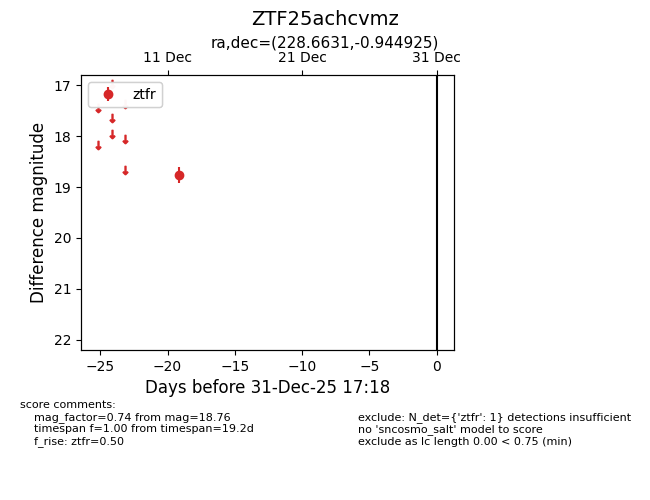
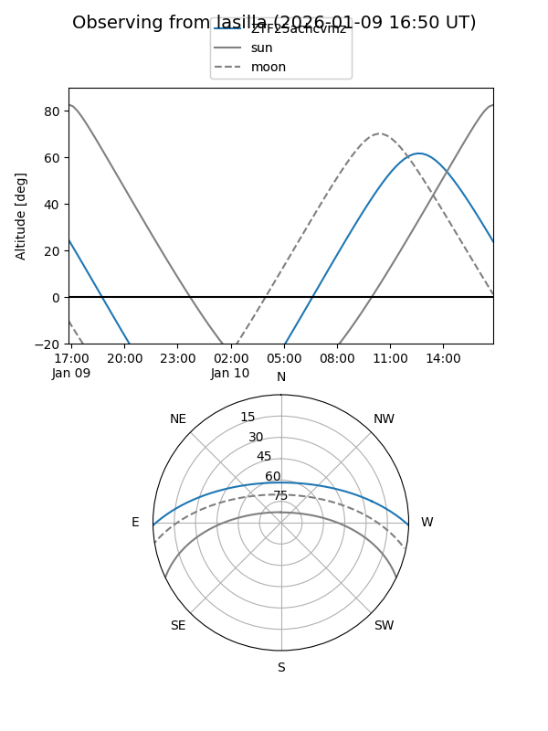
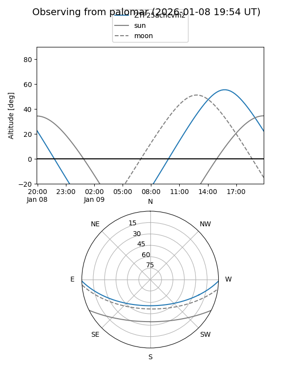

ZTF25achcvmz
Target ZTF25achcvmz at 2026-01-09 12:49
Aliases and brokers:
FINK: link
Lasair: link
ALeRCE: link
alt names
ZTF25achcvmz (ztf,fink_ztf)
Coordinates:
equatorial (ra, dec) = 228.6631,-0.94493
equatorial (HMS+DMS) = 15:14:39.15,-00:56:41.73
galactic (l, b) = (359.6172,+45.57655)
Flags:
Photometry:
last ztfr=18.76
1 ztfr detections
Lightcurve

Visibility


Additional plots